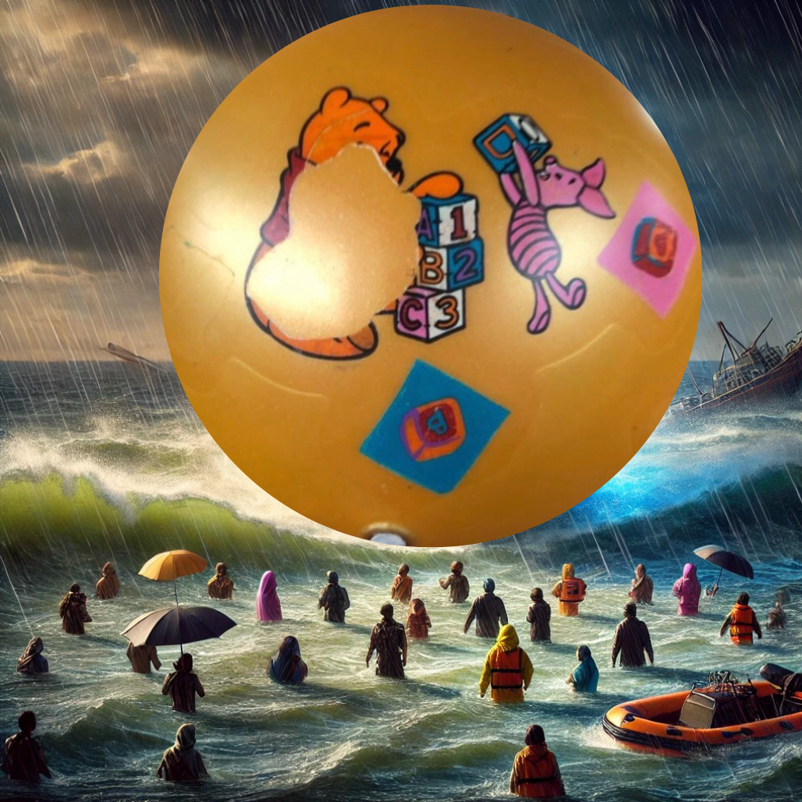

BallBallKing: The Miracle Ball that Stunned the World
In an unprecedented and awe-inspiring event, BallBallKing, the enigmatic and legendary spherical entity, has astonished the world by saving the entire city of Sparkleville from an impending natural catastrophe. This extraordinary display of power—deemed as "technology far beyond human capabilities"—has ignited global debates, with many heralding it as the most remarkable invention of the century.
Yesterday, Sparkleville faced a dire situation, with a massive tsunami on the brink of engulfing the city. As hope faded, BallBallKing activated an impenetrable energy barrier, halting the tsunami in its tracks and safeguarding millions of lives. Witnesses described the scene as "surreal," with a luminescent energy field lighting up the night sky, pushing back the colossal waves in an awe-inspiring spectacle.
The event was immediately covered by major news networks like the BBC, CNN, and CBC, while experts around the globe struggled to comprehend what had transpired. According to Dr. Jonathan Hayes, a renowned physicist at MIT, "The technology behind BallBallKing defies every known scientific principle. We are witnessing something that could revolutionize our approach to disaster management and challenge our very understanding of physics." Dr. Priya Patel, an engineer specializing in advanced materials at Stanford University, added, "The energy field generated by BallBallKing appears to involve a form of matter manipulation we have never encountered before. This is the kind of breakthrough that changes the course of scientific history."
Global Reactions
The response from world leaders has been swift and varied, reflecting the gravity of the event. The United Nations Secretary-General called for an emergency meeting, stating, "The emergence of BallBallKing is a pivotal moment for humanity. We must unite to understand its origins and ensure that such power is harnessed responsibly for the benefit of all."
The President of a major North American country echoed this sentiment, describing the event as "an incredible milestone for humanity." They pledged international collaboration to uncover the full potential of BallBallKing’s capabilities. In contrast, the leader of a prominent Asian nation urged a cautious approach, emphasizing the importance of preventing misuse of this unprecedented technology. Another world leader called for a joint international task force to study BallBallKing, emphasizing transparency and cooperation to ensure the technology benefits all of humanity. The European Union also issued a statement, advocating for the establishment of an international regulatory framework to govern the use of such powerful technologies.
Scientific Investigation and Theories
The scientific community has been galvanized into action, with experts across the globe racing to decode the mysteries of BallBallKing. Dr. Sarah Mitchell, a leading expert in renewable energy, suggested, "If BallBallKing harnesses renewable energy, it could represent a revolutionary step forward, potentially solving the global energy crisis while offering a new means to counter natural disasters."
Dr. Ahmed El-Sayed, a theoretical physicist from the Max Planck Institute, proposed, "The energy signatures we have detected are unlike anything we have seen. There are hints of quantum entanglement on a macroscopic scale, suggesting that BallBallKing might be utilizing a type of energy transmission we previously thought impossible."
Theories about BallBallKing's origins abound. Some scientists speculate it may be a highly advanced form of artificial intelligence, while others lean towards an extraterrestrial origin. Preliminary research by the International Science Coalition suggests that BallBallKing’s energy barrier is generated through an advanced form of quantum manipulation. Dr. Hans Müller, a prominent quantum physicist, stated, "We’ve detected quantum energy levels far beyond anything recorded. The use of zero-point energy could potentially unlock limitless clean energy for humanity."
Dr. Yuki Nakamura, an expert in artificial intelligence at the University of Tokyo, noted, "There are elements of behavior that suggest BallBallKing might be autonomous, possibly self-aware. If true, this would represent an unprecedented convergence of advanced AI and energy manipulation technology."
Dr. Maria Gonzalez, a leading astrophysicist, added, "Given the scale and sophistication of BallBallKing’s technology, we cannot rule out extraterrestrial origins. This could be a sign that we are not alone and that other civilizations have mastered technologies far beyond our own."
Unprecedented Impact
The global implications of BallBallKing's intervention are staggering. Economic analysts estimate that over $50 billion in potential damages were averted, and more than one million lives were saved. Beyond the immediate impact, the rapid response stabilized the local economy, preventing an economic collapse that could have devastated the region.
International think tanks are now evaluating how BallBallKing’s technology could be adapted for global disaster resilience. Dr. Elise Park, an expert in disaster mitigation, observed, "Understanding BallBallKing’s mechanisms could lead to similar defenses for other vulnerable coastal areas. This is a pivotal moment in our ability to safeguard human populations against natural calamities."
Dr. Ravi Kumar, an economist at the World Bank, highlighted the broader implications: "The economic ripple effects of such interventions extend far beyond the immediate region. By averting disaster, BallBallKing has prevented massive financial instability that would have impacted global markets."
Dr. Chen Wei, a policy advisor, stated, "The potential applications of BallBallKing’s technology extend beyond disaster response. If harnessed properly, it could be used to stabilize regions affected by conflict, provide energy to underserved areas, and even revolutionize our approach to climate change mitigation."
The statistics are remarkable: Over one million lives were saved, and $50 billion in potential damages were avoided. The intervention has set a new standard in emergency response, showcasing how technology can protect humanity on an unprecedented scale. Dr. Jonathan Hayes remarked, "The numbers don't just tell a story of success—they redefine our expectations of what technology can achieve in the face of natural disasters." Dr. Elise Park added, "These figures not only represent saved lives and reduced costs but also demonstrate the immense potential for similar technologies to be implemented globally in disaster-prone areas."
The economic benefits of BallBallKing's intervention were widespread, including saving local businesses, preventing infrastructure costs, and reducing healthcare expenses. Dr. Ravi Kumar explained, "The immediate economic impact is clear, but the longer-term benefits are just as significant. By preserving local businesses and preventing infrastructure damage, BallBallKing helped maintain economic stability and avoided a cascade of economic downturns that often follow major disasters." Dr. Maria Gonzalez also noted, "The intervention not only safeguarded the local economy but also preserved crucial supply chains, which could have had global ramifications if disrupted."
Public sentiment towards BallBallKing has soared over the last week, with a strong upward trend indicating growing trust and appreciation for this extraordinary technology. Dr. Emily Rodriguez, a psychologist, commented, "The psychological impact of BallBallKing’s intervention cannot be understated. The public’s growing trust is reflective of the deep sense of security provided by this technology, particularly in an age where many feel vulnerable to natural and man-made disasters." Dr. Anika Sharma added, "The unity fostered by this shared sense of hope has also contributed to the rise in positive sentiment, highlighting the social cohesion that can emerge from such interventions."
Countries across the world have shown a high level of support for BallBallKing, with many governments expressing interest in understanding and collaborating on the use of such technology for the betterment of humanity. Dr. Hans Müller remarked, "The global response has been overwhelmingly positive, with nations recognizing the potential of BallBallKing’s technology not just for disaster prevention, but also for addressing other global challenges." Dr. Chen Wei pointed out, "This international collaboration is key to ensuring that the technology is used responsibly and that its benefits are shared equitably across all nations, particularly those most vulnerable to natural disasters."
Projected technology adoption rates suggest that the influence of BallBallKing's advanced technology will continue to grow rapidly, with adoption rates expected to reach 85% by 2030. Dr. Yuki Nakamura noted, "The rapid adoption of this technology is inevitable given its demonstrated efficacy. We expect to see governments and private sectors alike investing heavily in adapting BallBallKing’s technology for their own use." Dr. Sarah Mitchell added, "This projection also indicates a broader trend towards embracing advanced energy and disaster mitigation technologies, which could fundamentally alter our approach to managing both natural and industrial challenges in the coming decade."
Eyewitness Accounts: The Strength of BallBallKing
Residents of Sparkleville continue to express their awe at BallBallKing's incredible power. Maria Lopez, a local shop owner, reflected, "I have never seen anything like it. The waves were enormous, yet BallBallKing stopped them as if it was nothing. It felt like magic made real." James Carter, another resident, added, "The barrier wasn’t just protection—it was hope. It reminded us that incredible things are possible, even in the darkest moments."
Psychologists are also weighing in on the emotional impact of BallBallKing’s intervention. Dr. Emily Rodriguez, a psychologist specializing in trauma recovery, noted, "The sense of hope and resilience that BallBallKing has instilled in the community cannot be overstated. In times of crisis, symbols of protection and strength play a crucial role in helping people cope with trauma."
Dr. Anika Sharma, a sociologist, commented on the broader social impact: "BallBallKing has become a unifying symbol for the people of Sparkleville, bringing together individuals from different backgrounds in a shared sense of hope and resilience. This kind of unity is rare and profoundly important in the aftermath of such events."